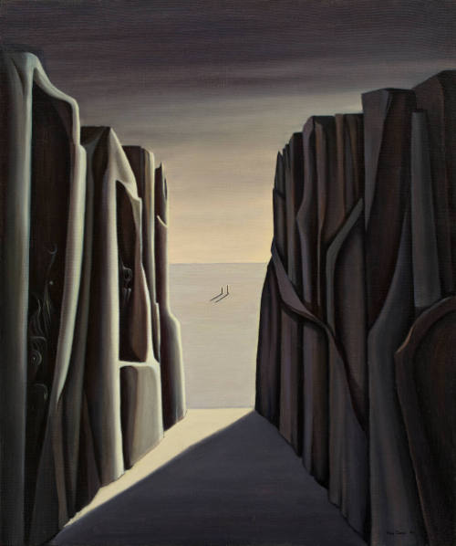
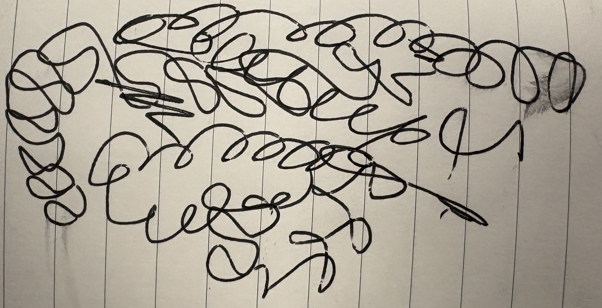
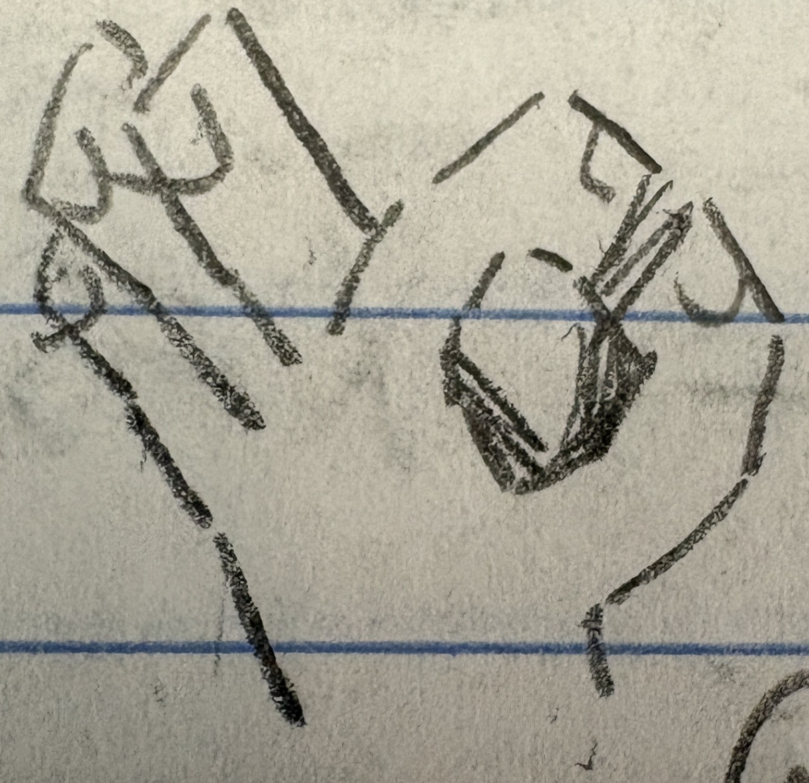
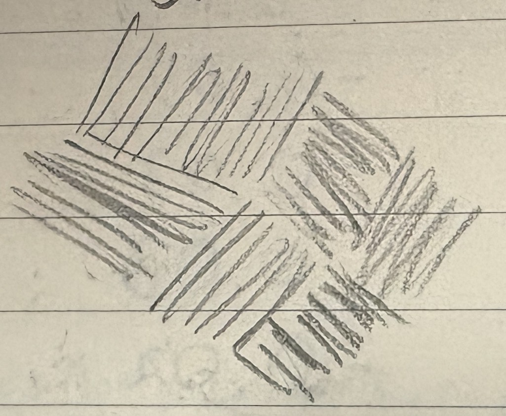
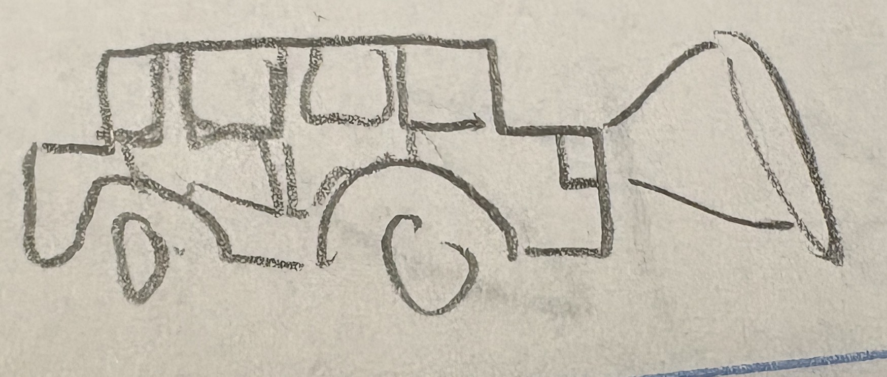
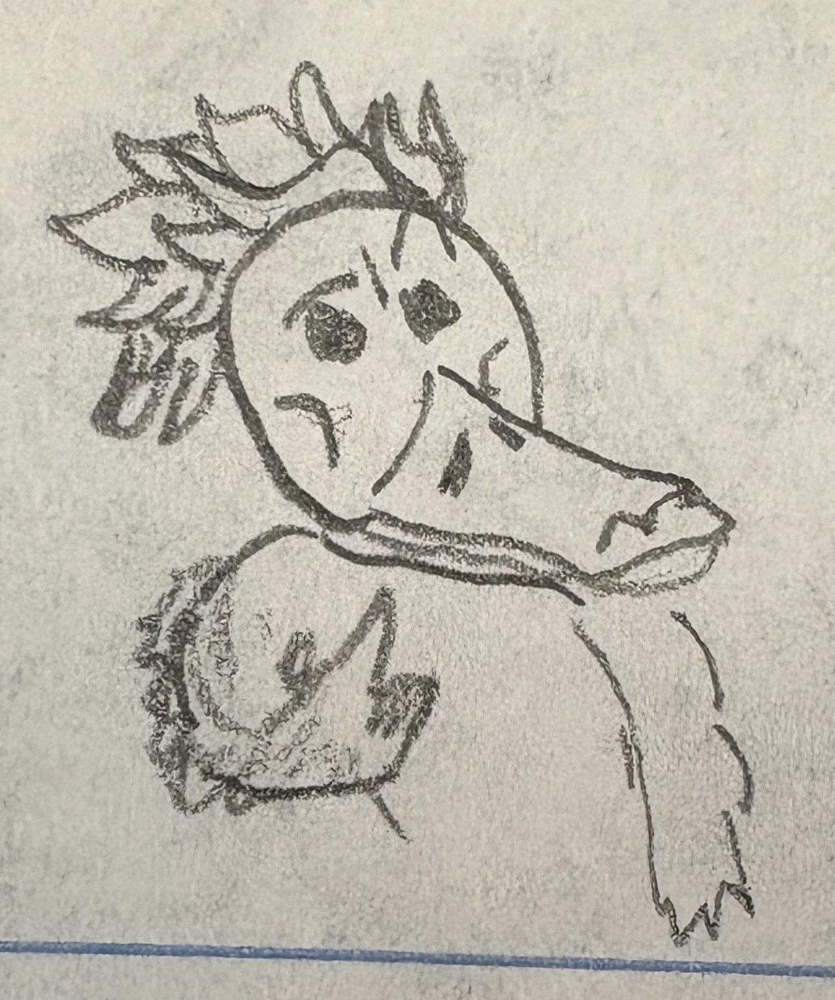

My poetry has a clear link of form between the poems, specifically the tercet.
This form initially stood out to me as interesting.
The number 3 is a common number in nature and human life, so the form made sense to me, especially in terms of rhythmic flow.
That being said, often this rhythmic scheme of tercets can feel odd or awkward, as us humans hear music and rhythm usually in 4s.
This awkwardness both opened up a lot of opportunities and made more of a challenge in my writing, creating simplicity for more uncanny feeling poems (as in The Neighbor’s Apartment), but also limited my ability for flow in lighter poems (as in Fleeting).
In those challenging moments, I leaned more heavily on meter and syllabic rhythm line by line (also as in Fleeting) or took a left turn into more stream-of-consciousness, prosaic writing (as in Worcester Walk).
I also experimented with rhyming, choosing to focus more on end line rhyme.
In The Warrior’s Storm, the poem was originally a poem of couplets, with a rhyme scheme of AA BB and continuing on.
I felt the original poem was rather strong, but I had wanted to see it as a tercet poem and explore its idea of this myth or forgotten story.
So, rather than continuing the current rhyming and narrative form, I had a “chapter title” begin each stanza.
For each individual poem, there is a tie in with my experience and life:
For Fleeting, there was a moment in our studio at the Rural Cemetery, in which the smell of the grass in the wind took me back, for half a second, to summer camp days of elementary school.
The poem had originally had repeating ending and beginning lines, but after reading it for Portfolio Review, it felt uncomfortable to read.
Removing those repeating lines had brought it to tercets, which ended up feeling much better to read and much faster.
You get into the flow of reading the poem, and then it ends, reflecting the final line of the poem.
For The Neighbor’s Apartment, this poem has gone through a lot of revision, as it was my first workshop poem.
Although the poem had always been in tercets, the amount of stanzas has shifted a bit since I’ve been working on it.
This poem reflects my personal struggles with opening up to others, particularly those that are close to me and have expressly put in the effort to get to know me.
Each stanza ends abruptly, mimicking the abruptness of realizing that what you are trying to open is, in fact, locked.
I had expressly put periods at the end of only the lines with an abruptness, adding emphasis to the decisiveness of the lock.
For The Glow, I wanted to use repetition to emphasize the importance and significance of “the imperceivable treasure”.
The repetition jumps between anaphora and epistrophe, as I wanted there to be a bit of change in rhythm, reflecting my shifting thoughts as I move towards this goal.
The last 2 stanzas and last line point towards what’s really stopping me from reaching this “light”, me.
The poem explores my struggles with anxiety and perfectionism barricading me from continuing towards my goals and dreams.
“My dreams were made for this”, signifying how these goals are what I dream for.
For As Viewing I Have No Shadow, this was a poem I had written while in the WAM.
This painting had caught my eye, and rather than do a direct Ekphrasis poem, I wanted to add my perspective a bit more.
The poem followed a terza rima rhyme scheme, giving it a slight playfulness while the poem follows a more uncanny style.
The poem was written as what I imagined was happening in the painting, with a combination of what I noticed around the room the painting was in.
“As a blind man walks slow,” refers to a museum employee with glasses that was watching us four to make sure we didn’t do anything dumb.
For The Warrior’s Storm, this poem follows a character, “The Warrior”, that cannot achieve amazing feats due to a storm they are constantly fighting through.
Even though The Warrior wants to be great, they must battle a storm in order to even reach the level most people achieve.
The poem is an extended metaphor for the fight many people go through with depression, and how it affects those with ambition/aspirations in particular.
The repetition at the beginning of each stanza, titling each “Chapter,” follows the experience of these people.
For Doodles and things, this poem reflects on my struggles to maintain a determined focus as the term comes to an end.
It follows the daydreams and thoughts I have while my focus drifts elsewhere.
In the spirit of drifting focus, it follows a rather stream-of-consciousness and casual style, jumping from topic to topic as they appear.
The images in the poem are actually doodles I found in my notebook from earlier this year.
Lastly, for Worcester Walk, this one holds a special place in my heart.
It follows my walks around Worcester, on a phone call with my Dad.
I often call my Dad while I’m outside as I don’t get too much time alone where I live and it gives me an excuse to move around.
The poem is very casual, as I wanted this one to be like you are intercepting a call that we had, rather than a metaphorical call.
Also, from the readings, I found there’s a rhythm to saying goodbye, you start with a longer goodbye, then move towards 1 or 2 words, which is reflected at the end.
When the wind hits just right,
and the sun shines brightly,
the smell of the earth floats by,
And faintly something's caught,
sunny days years ago,
laughter and joyful cries,
Hikes through the green forest,
pools and beaches with friends,
and playing through the day,
Cold ice cream in the warmth,
melting in the wrapper,
a flavor rarely found,
You sleep happily because,
tomorrow is the same,
and then the moment's gone.
The door remains locked, always.
A sign taped up reads "Please come in!"
And you can try the handle, but it won't ever budge.
A doggy flap swings open only for the dog
The retriever moves in and out as it wants
And you can leave food for it, but it never had the key.
One day it unlocks for you
The Neighbor's Apartment furnished and pleasant
And you can try opening things, but it's all locked.
The space you find is comfortable
It's made an area for you to spend time
And nothing will stop you from prying
But the next day, you won't be let inside.
The radiant glow
The distant light
The imperceivable treasure
Impossibly far, yet just out of reach
Blinding my vision, a beautiful star
The peak ever seen, forever in view
Placed at just a step away
It taunts me at just a step away
My dreams are just a step away
My body moves for it
As my arm reaches for it
And my hand grasps at air for it
My dreams were made for this
All the blood, sweat, and tears for this
I've lived my life everyday for this
A thousand miles were crossed
A thousand choices made
A thousand hands still pull at me
I've fought to be me
I've grown into me
So who would be stopping me?
Is it really just me?

Two figures standing at nothing,
Not a single glimmer of fear,
Darkness is here, at the something.
Two figures laugh as the gray night draws near,
Grayer land lit by a grayest sun,
Dark forms writhing in cliffs so sheer.
Two figures stand, nothing to be done,
As a blind man wanders slow,
Watching to make sure there's not too much fun.
Two figures laughing at no joke no one knows.
They are just paint after all.
Soon one will realize and say "I Have No Shadow."
The Story of Battle,
The warrior's blade was badly worn,
Their shield tattered, their clothes torn.
The Story of Perseverance,
The warrior's stance was in exhausted form,
As they continually trudged through the violent storm.
The Story of Destruction,
Lightning thunders, waves crash,
Ships ripped asunder, cold winds lash.
The Story of History,
The warrior fought through the storm for ages,
A fight as seemingly outrageous
The Story of Nature,
As water fighting against the earth,
As darkness fights against the sun's birth.
The Story of Limitation,
The warrior was never known for larger labors,
And they will never be known for anything greater.
The Story of Legacy,
The stone statue erodes with the rain,
With constant reminders of the warrior's pain.


A cold Coke on a sunny afternoon,
All that could possibly be on my mind

of the term,Ring Ring...
Ring Ring...
Hey Dad, how's it going?
Sorry I couldn't quite catch your call earlier,
it's been a really awesome day today.
I ended up hanging out with,
like, literally everyone I know.
A very active social afternoon.
School work's been going well.
Almost done with everything,
Mostly just projects I gotta—
Oh, hey! What's up, man?
What're you up to right now?
Yea, yea no, alright I'll see you later—
Sorry I ran into someone I knew.
I'm just walking outside right now.
The sun's shining really brightly.
The smell of the earth just floats by.
It's a really, really nice day out.
Finally it actually feels like summer.
It's been hard to find my focus
It is the end of the term after all.
All I can think of is anything but work.
The other day we went to the WAM.
It was for poetry class studio work,
but it was my first time I've been there.
Oh look, there's a little bunny.
I keep seeing them while I'm walking.
Sometimes I just keep walking without seeing them.
How's it going at home?
How are the dogs doing?
How's Mom doing? Everything good?
Alright, I'm almost by the house.
Alright, talk to you later.
Alright, bye
Click.
What is there to say
about really short poems?
Up to you, I guess.